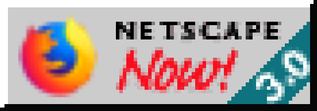

Paul Verbeek-Mast
Webring of webbies: please let me know if you want to join my webring. So far it's just me :-(

epilepsy warning
 Thanks to the wonderful suggestions of: Thijs Reijgersberg ("I think you might need an epilepsy warning ;)"), Stephanie Nemeth ("needs more stuff" & "i miss guestbooks"), Rik Schennink ("MORE PIZZAZZ!"), David van Gelder de Neufville ("where is the starry background"), Alexandra Leisse ("I think the background could use some more pop"), Tim Messerschmidt ("It needs a visitor counter!"), Flaki ("was disappointed to find zero <blink> tags in the source :>") & Wilfred Nas ("ik mis een ‘gastenboek’")
Thanks to the wonderful suggestions of: Thijs Reijgersberg ("I think you might need an epilepsy warning ;)"), Stephanie Nemeth ("needs more stuff" & "i miss guestbooks"), Rik Schennink ("MORE PIZZAZZ!"), David van Gelder de Neufville ("where is the starry background"), Alexandra Leisse ("I think the background could use some more pop"), Tim Messerschmidt ("It needs a visitor counter!"), Flaki ("was disappointed to find zero <blink> tags in the source :>") & Wilfred Nas ("ik mis een ‘gastenboek’")